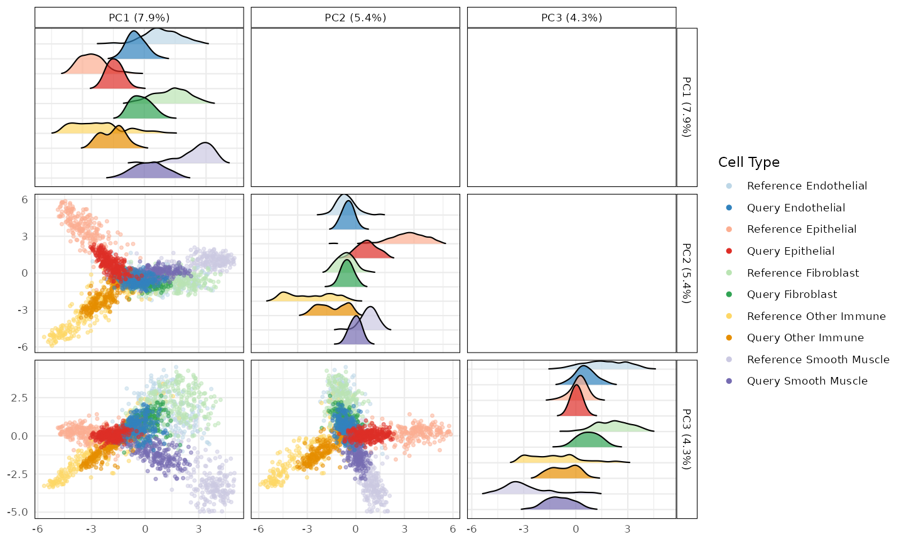
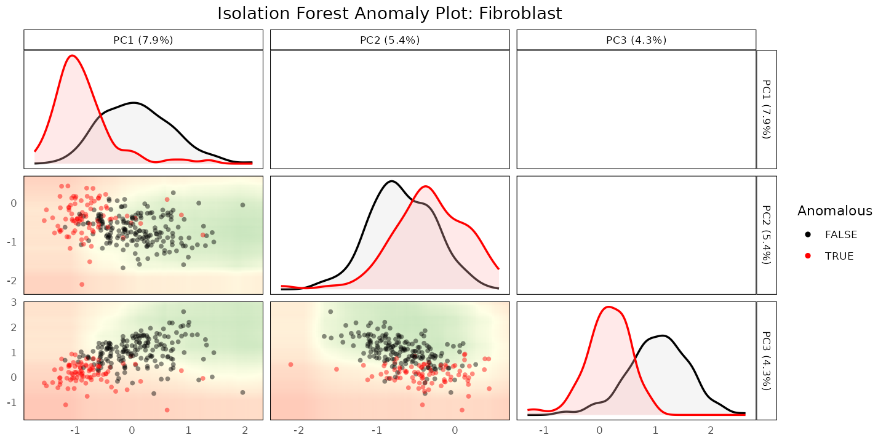
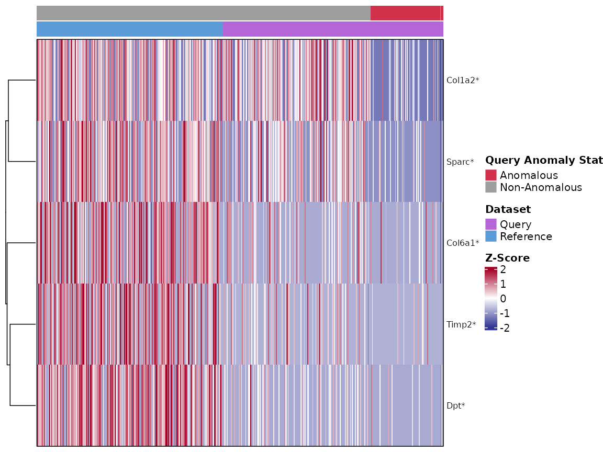
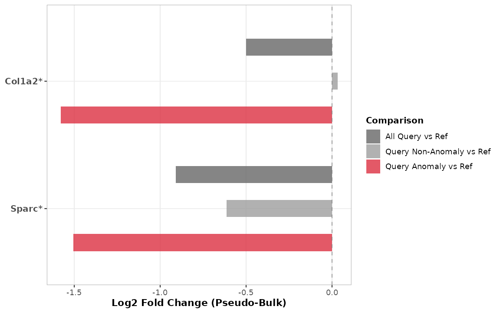

4. Case Study: An Inflamed Fibroblast State in Spatial Colitis Data
Anthony Christidis
Core for Computational Biomedicine, Harvard Medical SchoolAndrew Ghazi
Core for Computational Biomedicine, Harvard Medical SchoolSmriti Chawla
Core for Computational Biomedicine, Harvard Medical SchoolNitesh Turaga
Core for Computational Biomedicine, Harvard Medical SchoolLudwig Geistlinger
Core for Computational Biomedicine, Harvard Medical SchoolRobert Gentleman
Core for Computational Biomedicine, Harvard Medical SchoolSource:
vignettes/MERFISHCaseStudy.Rmd
MERFISHCaseStudy.RmdPurpose
Vignettes
2 and 3
worked with dissociated scRNA-seq data. scDiagnostics
operates on SingleCellExperiment
objects and does not assume any particular assay - the same diagnostics
apply directly to a SpatialExperiment
object from imaging-based spatial transcriptomics, without modification,
and the same holds for SpatialFeatureExperiment
objects (which extend SpatialExperiment with explicit
cell/tissue geometries), since both inherit the same core
SingleCellExperiment interface that
scDiagnostics relies on. This vignette repeats the
project-detect- characterize workflow on MERFISH spatial data from a
mouse model of DSS-induced colitis (Cadinu et al. 2024): healthy colon
tissue (Day 0, reference) versus tissue at peak inflammation (Day 9,
query).
library(scDiagnostics)
library(SingleCellExperiment)
library(SpatialExperiment)
set.seed(100)The data
merfish_reference_data and
merfish_query_data are downsampled subsets on the same
943-gene targeted MERFISH panel, restricted to 5 shared cell types; see
?merfish_reference_data for details. At Day 9, some
fibroblasts further split into an inflammation-associated “Inflamed
Fibroblast” state (tier2_merged) that does not exist at Day
0; a merged cell_type_merged column collapses this back
into a shared “Fibroblast” label so the two timepoints can be compared
directly.
data("merfish_reference_data")
data("merfish_query_data")
class(merfish_reference_data)
#> [1] "SpatialExperiment"
#> attr(,"package")
#> [1] "SpatialExperiment"
table(merfish_reference_data$cell_type_merged)
#>
#> Endothelial Epithelial Fibroblast Other Immune Smooth Muscle
#> 220 220 220 220 220
table(merfish_query_data$tier2_merged[merfish_query_data$cell_type_merged == "Fibroblast"])
#>
#> Fibroblast Inflamed Fibroblast
#> 163 97Step 1: project
plotCellTypePCA(
query_data = merfish_query_data,
reference_data = merfish_reference_data,
cell_types = unique(merfish_reference_data$cell_type_merged),
query_cell_type_col = "cell_type_merged",
ref_cell_type_col = "cell_type_merged",
pc_subset = 1:3)
#> Picking joint bandwidth of 0.279
#> Picking joint bandwidth of 0.222
#> Picking joint bandwidth of 0.251
Step 2: detect
anomaly_output <- detectAnomaly(
reference_data = merfish_reference_data,
query_data = merfish_query_data,
ref_cell_type_col = "cell_type_merged",
query_cell_type_col = "cell_type_merged",
cell_types = "Fibroblast",
pc_subset = 1:5,
n_tree = 500)
is_anomalous <- anomaly_output[["Fibroblast"]]$query_anomaly
mean(is_anomalous)
#> [1] 0.3307692
plot(anomaly_output, cell_type = "Fibroblast", pc_subset = 1:3, data_type = "query")
Because merfish_query_data retains the original
fine-grained tier2_merged label, we can check how the
flagged cells relate to the ground-truth “Inflamed Fibroblast”
state:
fibro_query <- merfish_query_data[, merfish_query_data$cell_type_merged == "Fibroblast"]
tapply(is_anomalous, fibro_query$tier2_merged, mean)
#> Fibroblast Inflamed Fibroblast
#> 0.1779141 0.5876289In this downsampled dataset, cells with the ground-truth “Inflamed Fibroblast” label are flagged as anomalous roughly twice as often as plain “Fibroblast” cells - a real enrichment, though far from a clean separation, consistent with inflammation being a graded rather than binary state at the single-cell level.
Step 3: characterize
To characterize what distinguishes the flagged cells,
calculateGeneShifts() can run its own internal anomaly
detection (detect_anomalies = TRUE,
anomaly_comparison = TRUE) on the full 943-gene panel - the
same panel detectAnomaly() used above - while restricting
the actual statistical comparison to a small extracellular matrix (ECM)
gene panel via genes_to_analyze. This keeps detection and
characterization consistent without needing to manually subset cells
first:
ecm_signature <- c("Col1a2", "Timp2", "Col6a1", "Sparc", "Dpt")
gene_shifts <- calculateGeneShifts(
query_data = merfish_query_data,
reference_data = merfish_reference_data,
query_cell_type_col = "cell_type_merged",
ref_cell_type_col = "cell_type_merged",
cell_types = "Fibroblast",
pc_subset = 1:5,
genes_to_analyze = ecm_signature,
detect_anomalies = TRUE,
anomaly_comparison = TRUE)
gene_shifts$PC1[order(gene_shifts$PC1$p_adjusted), ]
#> gene loading cell_type p_value mean_query mean_reference p_adjusted
#> 1 Dpt NA Fibroblast 5.122401e-26 0.1317246 1.991780 2.561201e-25
#> 2 Sparc NA Fibroblast 5.230999e-23 0.2882483 1.868690 1.307750e-22
#> 3 Col1a2 NA Fibroblast 1.030939e-22 0.4023466 2.106959 1.718231e-22
#> 4 Timp2 NA Fibroblast 9.084576e-20 0.1081913 1.289465 1.135572e-19
#> 5 Col6a1 NA Fibroblast 2.190372e-18 0.1925289 1.396044 2.190372e-18
#> significant
#> 1 TRUE
#> 2 TRUE
#> 3 TRUE
#> 4 TRUE
#> 5 TRUEplot() shows this as a heatmap of per-gene z-scores, one
column per cell (reference and query, annotated by anomaly status),
rather than collapsing each group to a single averaged column - which
matters here, since it reveals more than the group averages alone
would:
plot(gene_shifts, cell_type = "Fibroblast", pc_subset = 1:5,
plot_type = "heatmap", plot_by = "p_adjusted", n_genes = 5,
show_anomalies = TRUE)
All five ECM genes are significantly lower in the anomalous query
fibroblasts than in the reference, but the heatmap shows this isn’t a
single uniform effect. Col1a2 and Sparc show a
visible extra drop concentrated specifically in the anomalous
(rightmost, red-annotated) cells, beyond what’s already true of the
query more broadly. Timp2, Col6a1, and
Dpt, on the other hand, are already substantially reduced
across essentially all query fibroblasts - anomalous or not -
so for those three genes, detectAnomaly() isn’t isolating a
distinctly-shifted subgroup so much as reflecting a shift already
present dataset-wide. This split held up across several PC-subset
choices we checked, so it looks like a real property of this dataset
rather than a detection parameter to tune away: some genes distinguish
the specific cells flagged as anomalous, and others distinguish the
query condition as a whole - both are useful, but they’re different
claims.
The barplot below focuses on Col1a2 and
Sparc specifically, since they’re the clearest example of
the anomaly-specific pattern - a “Query Non-Anomaly vs Ref” bar close to
zero alongside a much larger “Query Anomaly vs Ref” bar, showing the
shift really is concentrated in the flagged cells for these two genes
(unlike Timp2/Col6a1/Dpt above,
where the non-anomaly bar would already be nearly as large as the
anomaly bar):
gene_shifts_focused <- calculateGeneShifts(
query_data = merfish_query_data,
reference_data = merfish_reference_data,
query_cell_type_col = "cell_type_merged",
ref_cell_type_col = "cell_type_merged",
cell_types = "Fibroblast",
pc_subset = 1:5,
genes_to_analyze = c("Col1a2", "Sparc"),
detect_anomalies = TRUE,
anomaly_comparison = TRUE)
plot(gene_shifts_focused, cell_type = "Fibroblast", pc_subset = 1:5,
plot_type = "barplot", plot_by = "p_adjusted", n_genes = 2,
show_anomalies = TRUE, pseudo_bulk = TRUE)
As with the COVID-19 case study, this is a specific finding about this cell population in this dataset; the broader claim that this workflow generalizes across data modalities is best supported by comparing this result to the scRNA-seq case study in vignette 3, not by either result alone.
R Session Info
R version 4.6.1 (2026-06-24)
Platform: x86_64-pc-linux-gnu
Running under: Ubuntu 24.04.5 LTS
Matrix products: default
BLAS: /usr/lib/x86_64-linux-gnu/openblas-pthread/libblas.so.3
LAPACK: /usr/lib/x86_64-linux-gnu/openblas-pthread/libopenblasp-r0.3.26.so; LAPACK version 3.12.0
locale:
[1] LC_CTYPE=C.UTF-8 LC_NUMERIC=C LC_TIME=C.UTF-8
[4] LC_COLLATE=C.UTF-8 LC_MONETARY=C.UTF-8 LC_MESSAGES=C.UTF-8
[7] LC_PAPER=C.UTF-8 LC_NAME=C LC_ADDRESS=C
[10] LC_TELEPHONE=C LC_MEASUREMENT=C.UTF-8 LC_IDENTIFICATION=C
time zone: UTC
tzcode source: system (glibc)
attached base packages:
[1] stats4 stats graphics grDevices utils datasets methods
[8] base
other attached packages:
[1] SpatialExperiment_1.22.0 SingleCellExperiment_1.34.0
[3] SummarizedExperiment_1.42.0 Biobase_2.72.0
[5] GenomicRanges_1.64.0 Seqinfo_1.2.0
[7] IRanges_2.46.0 S4Vectors_0.50.3
[9] BiocGenerics_0.58.1 generics_0.1.4
[11] MatrixGenerics_1.24.0 matrixStats_1.5.0
[13] scDiagnostics_1.7.15 BiocStyle_2.40.0
loaded via a namespace (and not attached):
[1] tidyselect_1.2.1 dplyr_1.2.1 farver_2.1.2
[4] S7_0.2.2 fastmap_1.2.0 GGally_2.4.0
[7] digest_0.6.39 lifecycle_1.0.5 cluster_2.1.8.2
[10] magrittr_2.0.5 compiler_4.6.1 rlang_1.3.0
[13] sass_0.4.10 tools_4.6.1 yaml_2.3.12
[16] knitr_1.52 S4Arrays_1.12.0 labeling_0.4.3
[19] htmlwidgets_1.6.4 DelayedArray_0.38.2 RColorBrewer_1.1-3
[22] abind_1.4-8 withr_3.0.3 purrr_1.2.2
[25] desc_1.4.3 grid_4.6.1 colorspace_2.1-3
[28] ggplot2_4.0.3 scales_1.4.0 iterators_1.0.14
[31] ggridges_0.5.7 cli_3.6.6 rmarkdown_2.32
[34] crayon_1.5.3 ragg_1.5.2 otel_0.2.0
[37] rjson_0.2.23 cachem_1.1.0 parallel_4.6.1
[40] BiocManager_1.30.27 XVector_0.52.0 vctrs_0.7.3
[43] Matrix_1.7-5 jsonlite_2.0.0 bookdown_0.48
[46] GetoptLong_1.1.1 clue_0.3-68 systemfonts_1.3.2
[49] magick_2.9.1 foreach_1.5.2 jquerylib_0.1.4
[52] tidyr_1.3.2 glue_1.8.1 pkgdown_2.2.1
[55] ggstats_0.14.0 codetools_0.2-20 shape_1.4.6.1
[58] gtable_0.3.6 ComplexHeatmap_2.28.0 tibble_3.3.1
[61] pillar_1.11.1 htmltools_0.5.9 circlize_0.4.18
[64] R6_2.6.1 textshaping_1.0.5 doParallel_1.0.17
[67] evaluate_1.0.5 isotree_0.6.1-5 lattice_0.22-9
[70] png_0.1-9 RhpcBLASctl_0.23-42 bslib_0.12.0
[73] Rcpp_1.1.2 SparseArray_1.12.2 xfun_0.61
[76] GlobalOptions_0.1.4 fs_2.1.0 pkgconfig_2.0.3